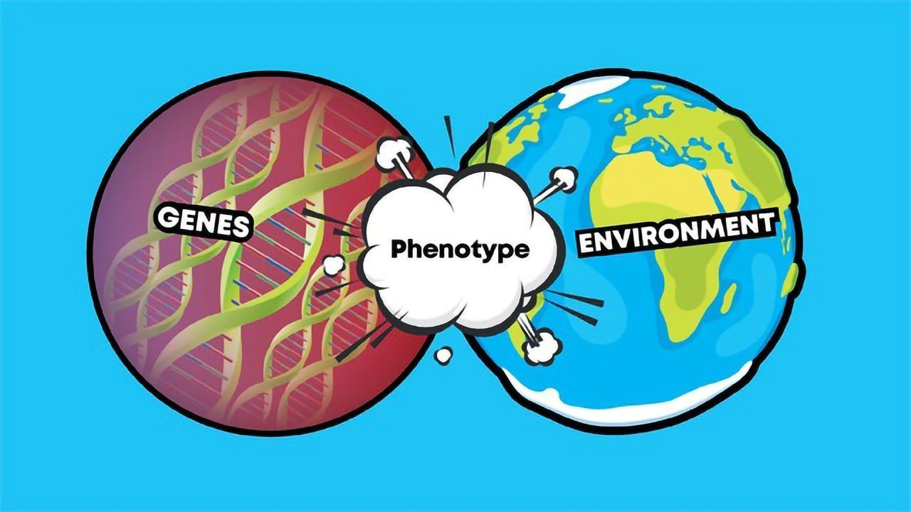
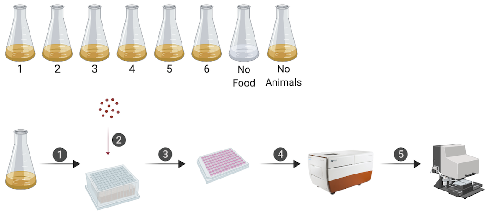
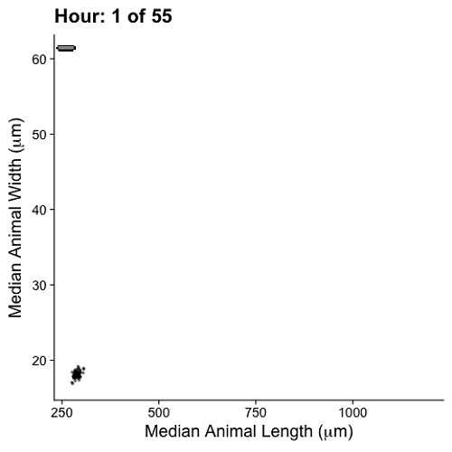
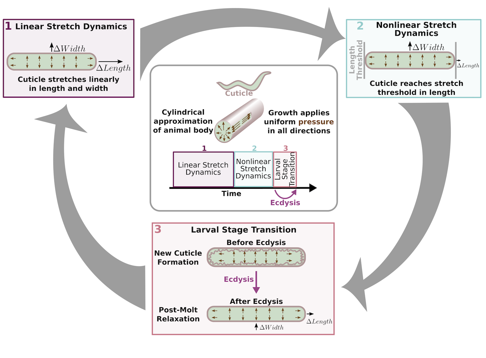
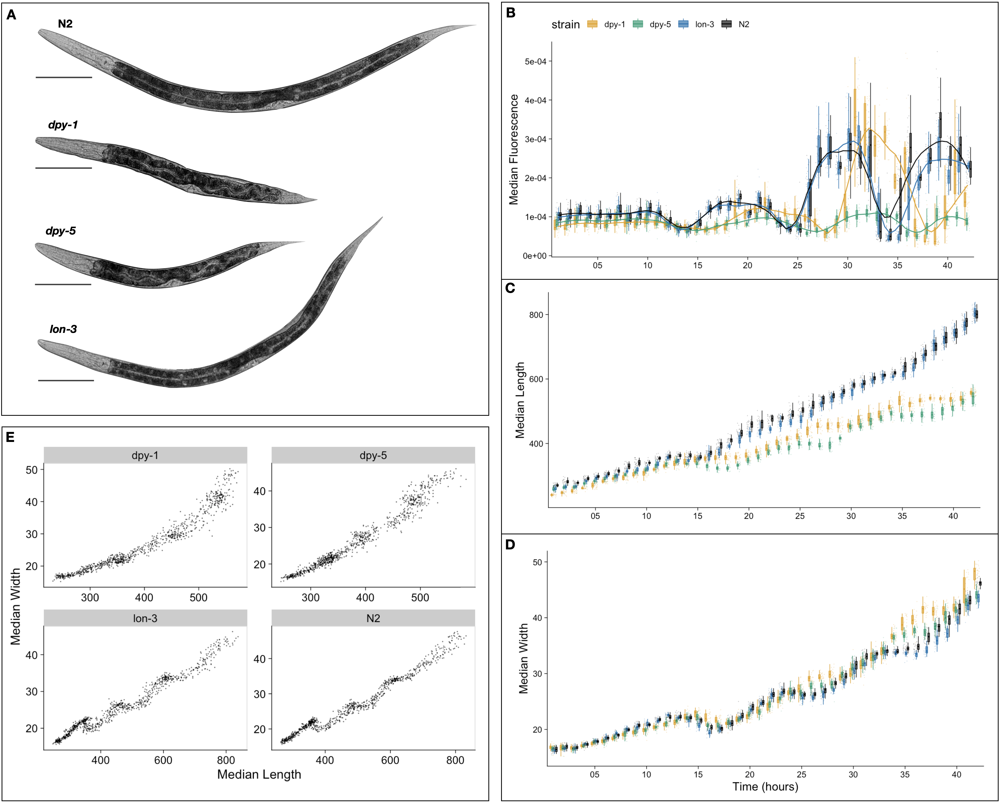
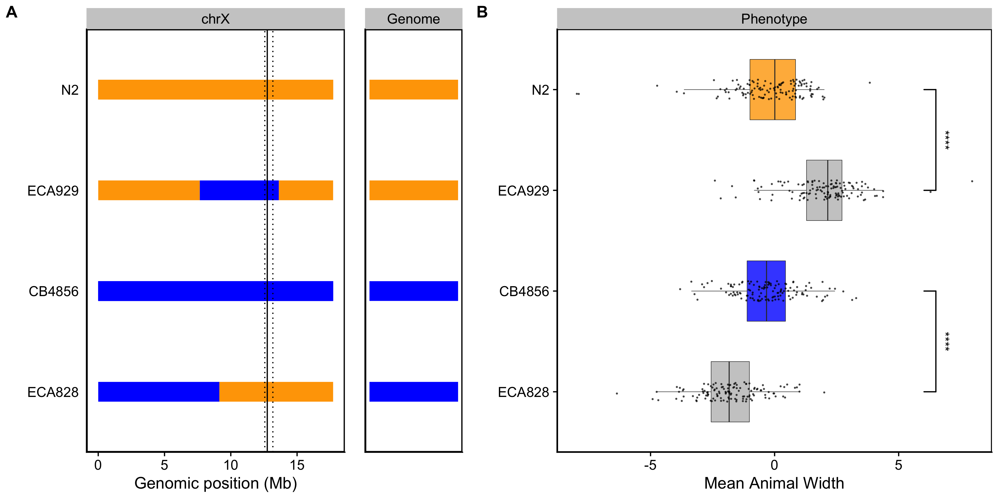

From 2018 - 2022 I embarked on the arduous journey that is graduate school. After many experiments, endless lines of code, and countless hours spent thesis writing, I successfully defended my dissertation!
Here is a short overview of the work that earned me the title of Dr! :tada:
Introduction
Extensive phenotypic diversity exists in the animal kingdom. A goal of biological research is to decipher the source of this diversity and study its impact on individuals, populations, and species. The field of quantitative genetics classically postulates that variation among phenotypes arises from two major sources: genetics and environment [1,2]. Expressed as an equation, this can be written as,
\[
V_P = V_G + V_E
\]
where \(V_{P}\) represents variance in a phenotype, \(V_{G}\) is genetic variation, and \(V_{E}\) is variation in the environment. The genetic component of variation arises from genetic variants within a population [3]. Conversely, environmental variation arises when individuals of the same genotype experience changes in environmental conditions (i.e. food availability, temperature) and respond with multiple phenotypic differences [4].
From genotype to phenotype
Recent advances in sequencing technologies have accelerated the generation of vast amounts of genotype data [5-7] and have also enabled scientists to identify genetic perturbations causally linked to disease traits. However, discerning the relationship between genotype and phenotype remains a challenge. Although there is a strong correlation between the two, phenotype is not solely determined by the genotype of a few trait-associated genes but rather is the cumulative result of interactions among genetic and non-genetic factors over time [8].
This is particularly apparent in the context of disease. The clinical symptoms we observe in affected individuals are the result of interactions between their genetic background, mutations, and the environment over time. Although challenging, the identification of genetic variants underlying phenotypes is key to understanding how genotype influences complex traits associated with growth, health, and disease.

Body size, in particular, is a trait that varies strikingly across animal phylogeny, and has critical ramifications on an animal’s ability to survive and reproduce. For this reason, scientists aim to understand how organisms grow to their characteristic sizes. Organismal development comprises a sequence of genetically programmed and intricately linked events that follow precise temporal and spatial ordering. Remarkably, despite variation in environmental conditions (e.g. temperature, nutrient availability, etc), developing systems coordinate the organization and interaction among cells, tissues, and organs with high reproducibility. Studies of single cells have revealed that growth regulation can be achieved using time or size sensing control methods. In multicellular organisms, however, regulatory mechanisms must not only control single cell growth but also integrate it across organs and tissues during development. My graduate work focused on investigating mechanisms of growth regulation in developing Caenorhabditis elegans.
C. elegans
Since its establishment as a model organism in the 1970s, C. elegans has become a powerful system for genetic and molecular analysis. Notably, by the 1980s, scientists had documented the entire cell lineage of the animal, from embryo to adult. A decade later, C. elegans became the first multicellular organism to have its genome sequenced [9-13]. This 100 Mb genome, though relatively small, comprises six chromosomes and approximately 20,000 protein-coding genes that are homologous to protein-coding genes found in other organisms, including humans [14,15].
C. elegans development
C. elegans post-embryonic development consists of four larval stages (L1 - L4) that are punctuated by distinct developmental events called molts where animals shed an exoskeleton called the cuticle Each larval stage begins with a period of active growth, and is followed by a period of quiescence (lethargus) where feeding and movement is temporarily halted [16]. During this time, a new cuticle is synthesized under the old. A molt is completed when animals shed the old cuticle (ecdysis) and transition to the next stage [17].

Illustration of the C. elegans life cycle. Embryos hatch to the first larval stage and proceed through four larval stages (L1 - L4) before becoming mature adults. Transitions between larval stages are marked by molt events where the animal’s outer collagen-rich cuticle is shed. An alternate developmental stage, dauer, occurs in response to unfavorable environmental conditions.
Studying C. elegans larval development is relatively straightforward, however, doing so at high temporal resolution while maintaining high precision and throughput can be a challenge. In my work, I optimize a high-throughput phenotyping platform to facilitate the quantitative assessment of size and feeding behavior of thousands of individuals under tightly controlled environment conditions.

An overview of the experimental platform. Animals were synchronized and cultured in flasks where six flasks contained replicate populations of animals, one flask had a population of unfed animals, and one flask only contained bacterial food. At each hour of the experiment, all eight flasks were sampled. In step 1, animals were transferred from each flask to a single well of a 96-well microtiter plate. In step 2, fluorescent beads were added to each well. Following a 10-minute incubation period, animals from each well of the deep-well plate were transferred to several wells of a 96-well microtiter plate for step 3. In step 4, animals in each well of the microtiter plate were imaged. In step 5, the same animals were measured using the COPAS BIOSORT. This process was repeated every hour after feeding for 72 consecutive hours.
Project 1: The role of cuticle stretch in growth control
Using this platform to collect growth data over time, I find that as animals transitioned from one developmental stage to the next, changes in body shape occurred. Specifically, at each molt I observed simultaneous increases in length, decreases in width, and maintenance of volume.

Changes in body shape occur during stage transitions. Median width vs. median length for experimental hours 1 - 55. Red indicates animals that are in a stage transition (molt). Simultaneous changes in length and width occur during periods of increased quiescence.
Given this result, I proposed a novel mechanism by which constraints on cuticle stretch can influence developmental timing and growth rate. The C. elegans cuticle does not grow through the addition of new material, but rather stretches to accommodate increases in animal body size. Cuticle stretch is likely limited by the material properties of the cuticle. The C. elegans cuticle is primarily made of cross-linked collagens organized into lateral ridges and circumferential bands [18]. Commonly found in many biological systems, collagen-based materials are fairly flexible under low stress conditions. However, as stress increases, collagen fibrils may become elongated and orient in the load bearing direction leading to a decrease in elasticity [19].
I speculated that although elasticity of the cuticle permits growth during each larval stage, cuticle “stretchiness” is limited. By sensing the reduction of cuticle elasticity, C. elegans could use this as a mechanical signal to trigger molting events. Working with mathematical scientists to model a physical mechanism by which constraints on cuticle elasticity could cause changes in C. elegans body shape, I found the model-predicted shape changes to be consistent with those observed in the experimental data.
This work puts forth a novel “Stretcher” mechanism for how C. elegans could use physical constraints (i.e. restriction of cuticle stretch) as a sensor for growth and as a means to regulate developmental timing.

Cuticle stretch dynamics guide stage transitions. The Stretcher model describes each larval stage as a cycle. Nematodes are modeled as a cylindrical object with a thin cuticle epidermis. (Box 1) Linear Stretch Dynamics: uniform growth pressure stretches the cuticle linearly in both length and width. (Box 2) Nonlinear Stretch Dynamics: the cuticle has reached a stretch threshold in length, and under uniform growth pressure the length stretches less (sub-linear) and width stretches linearly. (Box 3) Larval Stage Transition: a new cuticle is formed and the old cuticle is shed (ecdysis), removing constraints in length. The nematode body “relaxes” in length, causing an increase in length, a decrease in width, and constant volume.
Noting the importance of the cuticle in C. elegans growth, I further examined the larval development of strains with mutations in distinct cuticle collagen proteins. In C. elegans, many genes involved in the formation of the cuticle are also known to influence body size and shape. I assessed post-embryonic growth of mutants that were both reportedly shorter (dpy-1(e1), dpy-5(e61)) and longer (lon-3(e2175)) than wild type [20]. Here, I found that of the three mutant strains exhibit delayed growth and maintain a consistently shorter and wider shape when compared to wild type, emphasizing the importance of cuticle structure in development. Importantly, all three strains exhibited dynamics consistent with a “Stretcher” growth model.

Quantitative assessment of C. elegans mutant growth. (A) Representative images of strains used in this study taken at the L4 stage. Tukey boxplots for median animal fluorescence normalized by area (B), median animal length (C), and median animal width (D). Each point corresponds to the median value of a population of animals in each well. (E) Median length (x-axis) plotted against median length (y-axis).
Project 2: Genetic loci contribute to observable differences in growth
As previously mentioned, the process of development is highly reproducible even in the presence of genetic and environmental perturbations. I leveraged C. elegans natural genetic diversity to explore how genetic variation contributes to differences in animal growth. Two particular strains of interest are the laboratory-adapted wild-type strain, N2, and a wild strain from Hawaii, CB4856. The genetic diversity between these two strains was shown to underlie multiple phenotypic differences, including aggregation behavior, life history traits, and gene expression [21]. Recombinant populations constructed from crosses between the N2 and CB4856 strains each have unique variants derived from each parental background. Performed at a large scale, these populations of recombinant individuals are a powerful tool to identify genomic regions that are correlated with phenotypic variation. Mapping the natural variation underlying phenotypic differences allows for the dissection of genetic networks involved in important biological processes.
To characterize the genetic basis for variation in body size and growth in C. elegans, I first performed a longitudinal study of post-embryonic growth in N2 and CB4856 animals. Overall, I observed little divergence in growth behavior between the two strains. Again, I detected continuous growth punctuated by periods of discontinuous growth rate, resulting in visible shifts in length and width over time. Although I observed similar patterns in overall growth dynamics, I also noticed small differences in body size at individual time points across development.

Quantitative measurements of growth for N2 and CB4856 animals. Tukey boxplots of mean length (A) and mean width (B) for the N2 (orange) and CB4856 (blue) strains over developmental time. Inset plots magnify mean animal size measurements from hour 48. Each point corresponds to the means length or mean width of a population of animals in each well.
To study these differences in size, I used a quantitative genetic mapping approach called linkage mapping. With this technique, regions of the genome that contain loci that affect growth can be identified. As a complex trait, developmental growth is likely influenced by many genes as well as the interactions among them. Using a large panel of recombinant individuals, I identified three distinct genomic regions that separately explain variation in animal length and width.

Linkage mapping identifies three loci associated with body size. Histogram of normalized mean body length (A) and mean body width (D) of the recombinant population. (B, E) Linkage mapping results for mean body length or mean body width are shown with genomic position (x-axis) plotted against the logarithm of the odds (LOD) score (y-axis). X-axis tick marks denote every 5 Mb. Significant loci are denoted by a red triangle at the peak marker, and blue shading shows the 95% confidence interval around the peak marker. The percentage of the total phenotypic variance in the RIAIL population that is explained by each loci is shown above the peak marker. (C, F) Tukey box plots show the normalized mean length or width (y-axis) of RIAILs split by genotype at the marker with the maximum LOD score (x-axis). Populations of recombinant strains were grown in independent wells. Each point corresponds to the mean value of all well means. Boxes for data from strains with the N2 allele are colored orange, and boxes for data from strains with the CB4856 allele are shown in blue.
I further validated the chromosome X locus and identified promising candidate genes that could contribute to the differences in size between the N2 and CB4856 strains. This work highlights the complex genetic architecture of body size, identifies promising candidate genes that may underlie variation in animal width, and provides a framework for future studies to investigate genetic mechanisms controlling developmental growth and body size in natural populations of C. elegans.

Validating the chromosome X QTL. (A) Strain genotypes are displayed as colored rectangles (N2: orange, CB4856: blue) for chromosome X (left) and in general for the rest of the chromosomes (right). The solid vertical line represents the peak marker of the QTL. The dashed vertical lines represent the confidence interval. (B) Normalized mean animal width (x-axis) is plotted as Tukey box plots against strain (y-axis). Each point corresponds to the mean width of a population of animals from each well. The boxes for the parental strains are colored: N2, orange; CB4856, blue. Statistical significance was calculated by Tukey’s HSD (**** = p-value < 0.0001).
Project 3: Developing a custom R package to handle image-based data
Developments in high-throughput imaging techniques have led to a rapid increase in these data. Researchers are able to move away from the laborious manual collection of images that typically limits large-scale analyses. However, typical users require software methods for efficient handling, analysis, and visualization to make the most of these extensive image datasets. In C. elegans, existing systems for automated image acquisition, such as the Molecular Devices ImageXpress platforms, generate images of animals that can be analyzed with software like CellProfiler’s WormToolbox [22]. This software uses probabilistic models trained on user-selected animals to automate the segmentation of animals from the background of images in high-throughput. As a result, CellProfiler’s WormToolbox is able to measure hundreds of phenotypes related to animal shape, intensity, and texture. Implementing this software for large-scale imaging experiments can generate large quantities of data that requires additional analysis software for reliable and reproducible handling, processing, and visualization. CellProfiler Analyst was developed to offer tools for the analysis of image-based datasets, but this software is not integrated with modern statistical environments. I sought to design a resource that facilitates the exploration of CellProfiler data in the R environment [23], where this limitation can be eliminated. The R language provides extensive open-source statistical and data visualization tools that are well supported by the user community. In leveraging R, I was able to create a flexible tool that can be rapidly integrated with other statistical R packages to suit project-specific analysis needs.
I developed easyXpress, a software package for the R statistical programming language, to assist in the processing, analysis, and visualization of C. elegans data generated using CellProfiler. easyXpress provides tools for quality control, summarization, and visualization of image-based C. elegans phenotype data. Built to be complementary to CellProfiler, this package provides a streamlined workflow for the rapid quantitative analysis of high-throughput imaging datasets.
References
Figures created with Biorender.com
- Lynch M, Walsh B, Others. Genetics and analysis of quantitative traits. Sinauer Sunderland, MA; 1998.
- Falconer DS, Others. Introduction to quantitative genetics. Introduction to quantitative genetics. 1960.
- Griffiths AJF, Miller JH, Suzuki DT, Lewontin RC, Gelbart WM. Genetic variation. W. H. Freeman; 2000.
- Davis MB, Shaw RG, Etterson JR. Evolutionary responses to changing climate. Ecology. 2005;86: 1704–1714. doi:10.1890/03-0788
- 1000 Genomes Project Consortium, Abecasis GR, Altshuler D, Auton A, Brooks LD, Durbin RM, et al. A map of human genome variation from population-scale sequencing. Nature. 2010;467: 1061–1073. doi:10.1038/nature09534
- Telenti A, Pierce LCT, Biggs WH, Iulio J di, Wong EHM, Fabani MM, et al. Deep sequencing of 10,000 human genomes. Proc Natl Acad Sci U S A. 2016;113: 11901–11906. doi:10.1073/pnas.1613365113
- Lek M, Karczewski KJ, Minikel EV, Samocha KE, Banks E, Fennell T, et al. Analysis of protein-coding genetic variation in 60,706 humans. Nature. 2016;536: 285–291. doi:10.1038/nature19057
- Cooper DN, Krawczak M, Polychronakos C, Tyler-Smith C, Kehrer-Sawatzki H. Where genotype is not predictive of phenotype: Towards an understanding of the molecular basis of reduced penetrance in human inherited disease. Hum Genet. 2013;132: 1077–1130. doi:10.1007/s00439-013-1331-2
- Sulston JE, Horvitz HR. Post-embryonic cell lineages of the nematode, caenorhabditis elegans. Dev Biol. 1977;56: 110–156. doi:10.1016/0012-1606(77)90158-0
- Sulston JE, Schierenberg E, White JG, Thomson JN. The embryonic cell lineage of the nematode caenorhabditis elegans. Dev Biol. 1983;100: 64–119. doi:10.1016/0012-1606(83)90201-4
- Deppe U, Schierenberg E, Cole T, Krieg C, Schmitt D, Yoder B, et al. Cell lineages of the embryo of the nematode caenorhabditis elegans. Proceedings of the National Academy of Sciences. 1978;75: 376–380.
- Kimble J, Hirsh D. The postembryonic cell lineages of the hermaphrodite and male gonads in caenorhabditis elegans. Dev Biol. 1979;70: 396–417. doi:10.1016/0012-1606(79)90035-6
- C. elegans Sequencing Consortium. Genome sequence of the nematode c. Elegans: A platform for investigating biology. Science. 1998;282: 2012–2018. doi:10.1126/science.282.5396.2012
- Kaletta T, Hengartner MO. Finding function in novel targets: C. Elegans as a model organism. Nat Rev Drug Discov. 2006;5: 387–398. doi:10.1038/nrd2031
- Kim W, Underwood RS, Greenwald I, Shaye DD. OrthoList 2: A new comparative genomic analysis of human and caenorhabditis elegans genes. Genetics. 2018;210: 445–461. doi:10.1534/genetics.118.301307
- Singh RN, Sulston JE. Some observations on moulting in caenorhabditis elegans. Nematologica. 1978;24: 63–71. doi:10.1163/187529278X00074
- Monsalve GC, Frand AR. Toward a unified model of developmental timing: A “molting” approach. Worm. 2012.
- Page AP, Johnstone IL. The cuticle. WormBook; 2007.
- Holzapfel GA. Similarities between soft biological tissues and rubberlike materials. Constitutive Models for Rubber IV. 2017; 607–617. doi:10.1201/9781315140216-105
- Cho JY, Choi T-W, Kim SH, Ahnn J, Lee S-K. Morphological characterization of small, dumpy, and long phenotypes in caenorhabditis elegans. Mol Cells. 2021;44: 160–167. doi:10.14348/molcells.2021.2236
- Evans KS, Wijk MH van, McGrath PT, Andersen EC, Sterken MG. From QTL to gene: C. Elegans facilitates discoveries of the genetic mechanisms underlying natural variation. Trends Genet. 2021;37: 933–947. doi:10.1016/j.tig.2021.06.005
- Wählby C, Kamentsky L, Liu ZH, Riklin-Raviv T, Conery AL, O’Rourke EJ, et al. An image analysis toolbox for high-throughput c. Elegans assays. Nat Methods. 2012;9: 714–716. doi:10.1038/nmeth.1984
- Team RC. R: A language and environment for statistical computing http://www.R-project.org. 2014.